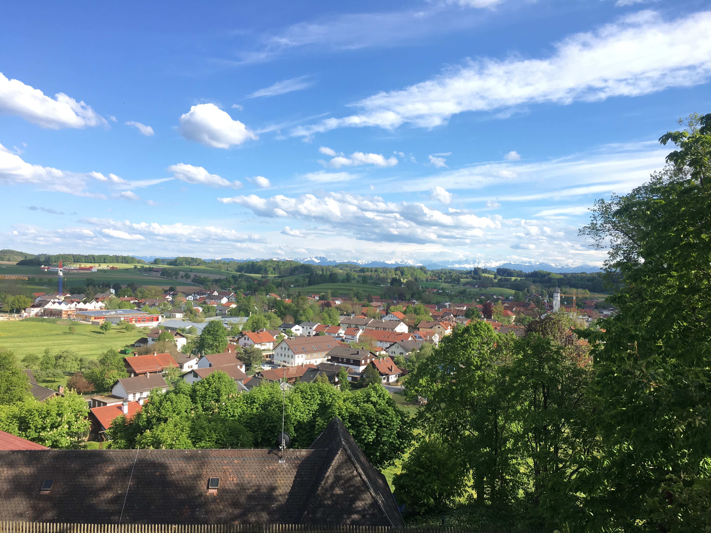

Andechs Abbey, Bavaria, Germany (Ammersee)
Description:
- when
- distance
- height
- level of difficulty
More information about the place on Wikipedia.
More information about the place on Wikipedia.
More information about the place on Wikipedia.

More information about the place on Wikipedia.
More information about the place on Wikipedia.